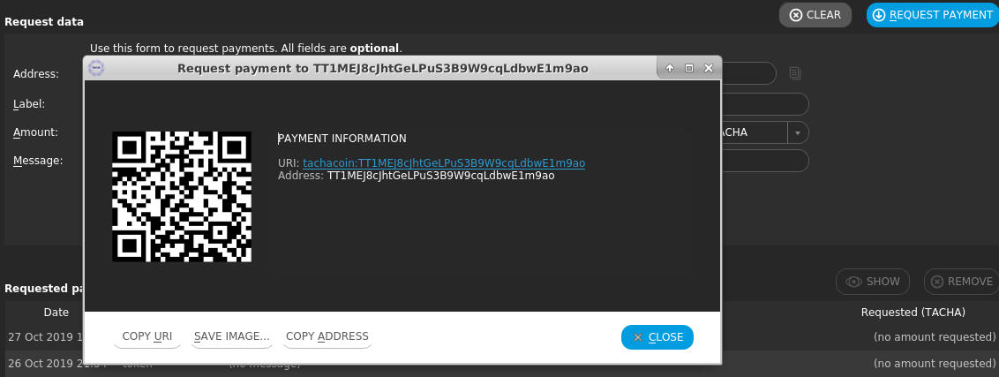
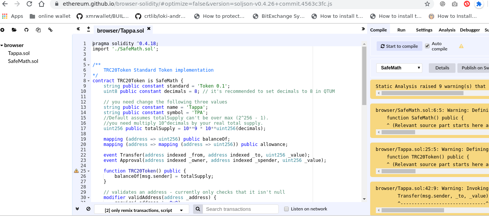
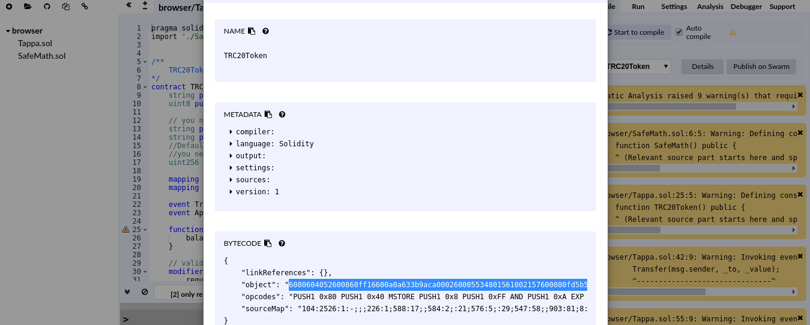

Introduction to Tacacoin
Tachacoin is a cryptocurrency that was folked from Bitcoin and Quantum coin which combines ethereum’s smart contract functionality with bitcoin’s security to create a coin that is suitable for adoption by businesses and ecommerce provided.
Tacha is a cryptocurrency platform that enables decentralized applications (dApps) and smart contracts to be developed and utilized. DApps work on mobile devices, and is compatible with most major blockchain ecosystems. We use our own Decentralized Governance Protocol (DGP) that enables blockchain setting modification through the use of smart contracts
Tachacoin is an open-sourced platform that merges Ethereum’s smart contract network with Bitcoin’s value transfer protocol. Its a fork of the QUANTUM coin. Tachacoin has an advantage in that it forked Bitcoin’s code to be compatible with Ethereum. Tachacoin benefits from the development community created for both, and application layers like the Lightning Network and Raiden Network can more easily be adapted. Tacha also uses an x85 Virtual Machine (VM) that supports a variety of development languages.
Bitcoin and Ethereum are the highest-profile blockchain projects, Tacha took a very smart development shortcut for rapid, iterative improvements.
Tachacoin blockchain uses PoS smart contracts, the major reason is that PoS is more energy efficient to mine cryptocurrency and provides a sleeker consensus at the expense of decentralization. This is how Tachacoin will be able to focus on mobile-first applications.
Decentralized Applications
With tachacoin, we enable enterprises to develop decentralized applications (DApp), using bitcoin technology to store transactions in each user's system, all transactions must be verified, and after verification there is no way to change them without alerting each user of the chain.Creating A TRC20 Token
TRC20 is the implementation of a standard API for tokens within smart contracts on Tachacoin，basically it is the same as QRC20 and the ERC20
Deployment Of TR20Token
- Download the latest Tachacoin from TACHACOIN WEBSITE or https://github.com/tachacoin/tachacoin/releases/latest.
- Open the wallet and allow it to synic. Make sure you have TACHA in your wallet to pay for gas Click Request payment to get your receive address. 
- Go to https://ethereum.github.io/browser-solidity/#optimize=false&version=soljson-v0.4.26+commit.4563c3fc.js and delete the .sol file and recreate another one . 
- Click “Create Contract” button, save the SenderAddress and ContractAddress
- Wait some time until the transaction get confirmed, and the contract is created successfully.
From the above website, Click the “+” button on the top-right side，create new files SafeMath.sol and TRC20Token.sol, copy & paste you code heer. Then you have to Click details on the right side, copy the save BYTECODE。 
Create Contract
Open your Tachacoin wallet, and then go to where you have SMART CONTRACT, click on create
Add token In Tachacoin Wallet
Run the tachacoin wallet and go to “TRC Token” page and click “Add Token” button, input your SenderAddress, and choose SenderAddress as your Token Address, click “Confirm” button to get this done.
Receive and send tokens
From your tachacoin wallet click to choose your token, click the “Send” and “Receive” button to receive and send tokens
CHECK OTHERS
TRC20 Integration Technical Guide
Introduction
Exchanges should use one main address to store tokens for all users. Below MAIN_QRC_ADDRESS is the main address. The address of the QRC20 token contract is TOKEN_CONTRACT_ADDRESS.
TOKEN_DECIMALS is the decimals of the token, which varies per token. Here we set it 8.
Running The Tachacoin
First enable the indexing service when starting tachacoind, using the flags -logevents -txindex.
Getting Token Balance
tachacoin-cli callcontract \
{TOKEN_CONTRACT_ADDRESS} \
70a08231{to32bytesArg(addressToHash160($userAddress))}
In the JSON output look for executionResult.output. This is the token balance.
Withdraw
tachacoin-cli sendtocontract \
{TOKEN_CONTRACT_ADDRESS} \
a9059cbb{to32bytesArg(addressToHash160($userAddress))}{to32bytesArg(addDecimals($amount)) \
0 \
{DEFAULT_GAS_LIMIT} \
{DEFAULT_GAS_PRICE} \
{MAIN_QRC_ADDRESS}
The above returns the txid of this transaction.
Deposit and Witdraw Logs
tachacoin-cli searchlogs \
STARTING_BLOCK \
999999999 \
'{ "addresses": ["TOKEN_CONTRACT_ADDRESS"]}' \
'{"topics": ["ddf252ad1be2c89b69c2b068fc378daa952ba7f163c4a11628f55a4df523b3ef"]}'
Checking Confirmations
Given a transaction id $txid:
tachacoin-cli gettransaction $txid
How To Run The Tachacoin Wallet
Tachacoin is built for the following platform- Ubuntu, Window, ARM32, MacOSX_Mojave
UBUNTU
For the GUI, go to the directory where you have the wallet downloaded into and open a terminal in that folder and type in
./tachacoin-qt

From the above wallet, you can see the following


Tachacoin Window Wallet
Download the window wallet from Tachacoin Github or Tachacoin Website, you can also download the tachacoin window installer to install the tachacoin wallet automatically for you. Once its install, you can then open the wallet and its illustration is similar with that of UBUNTU once its opened
Tachacoin MACOS Wallet
For MacOS, download the wallet from Tachacoin Github or Tachacoin Website, then run the wallet. All running wallet is same as the illustration from the UBUNTU wallet
How To Stake Tachacoin
Launch the tachacoin daemon, if your wallet is encrypted, open with
tachacoin-cli walletpassphrase password 999999999 true
for example
tachacoin-cli walletpassphrase Ytw1r2eg3v4db5hh6yy7gf8s9RE2Ts 999999999 true
Once unlocked, if you have TACHA, wait until we have more than 501 confirmations if you just receive it to enable us for staking.
once its confirmed check your wallet to see if its staking with
./tachacoin-cli getstakinginfo
{
"enabled": true,
"staking": false,
"errors": "",
"pooledtx": 0,
"difficulty": 19159969.51398449,
"search-interval": 0,
"weight": 0,
"netstakeweight": 8206248895088427,
"expectedtime": 0
}